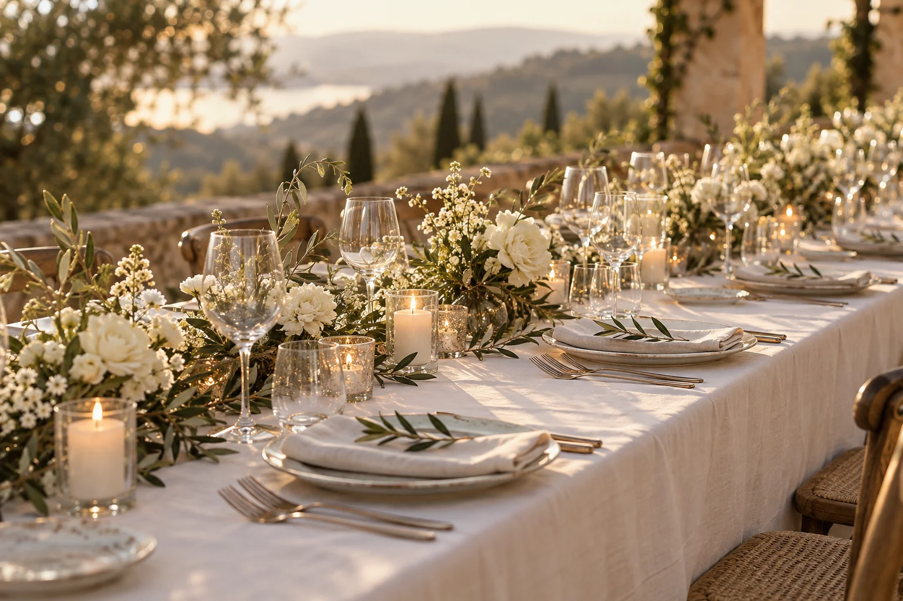

THE SOUNDTRACK & STORIES OF OUR DAY
In between
moments.
待合室・歓談の曲
お迎えの時間から、会話がはずむひとときまで。
あの日の空気をつくった、さりげないメロディー。仮原稿

以下は構成確認用の仮リストです。シーン・曲名・並び順は、決定後に差し替えます。
WAITING
待合室
ゲストをお迎えする時間に。仮原稿
- 01待合室 BGM 01仮曲を聴く準備中
曲名を入力してください
アーティスト名 · 準備中
- 02待合室 BGM 02仮曲を聴く準備中
曲名を入力してください
アーティスト名 · 準備中
- 03待合室 BGM 03仮曲を聴く準備中
曲名を入力してください
アーティスト名 · 準備中
CONVERSATION
歓談
お食事と会話を彩る時間に。仮原稿
- 04歓談 BGM 01仮曲を聴く準備中
曲名を入力してください
アーティスト名 · 準備中
- 05歓談 BGM 02仮曲を聴く準備中
曲名を入力してください
アーティスト名 · 準備中
- 06歓談 BGM 03仮曲を聴く準備中
曲名を入力してください
アーティスト名 · 準備中
- 07歓談 BGM 04仮曲を聴く準備中
曲名を入力してください
アーティスト名 · 準備中
- 08歓談 BGM 05仮曲を聴く準備中
曲名を入力してください
アーティスト名 · 準備中
KEEP THE MEMORIES PLAYING
お気に入りの一曲と、あの日の余韻を。
仮原稿